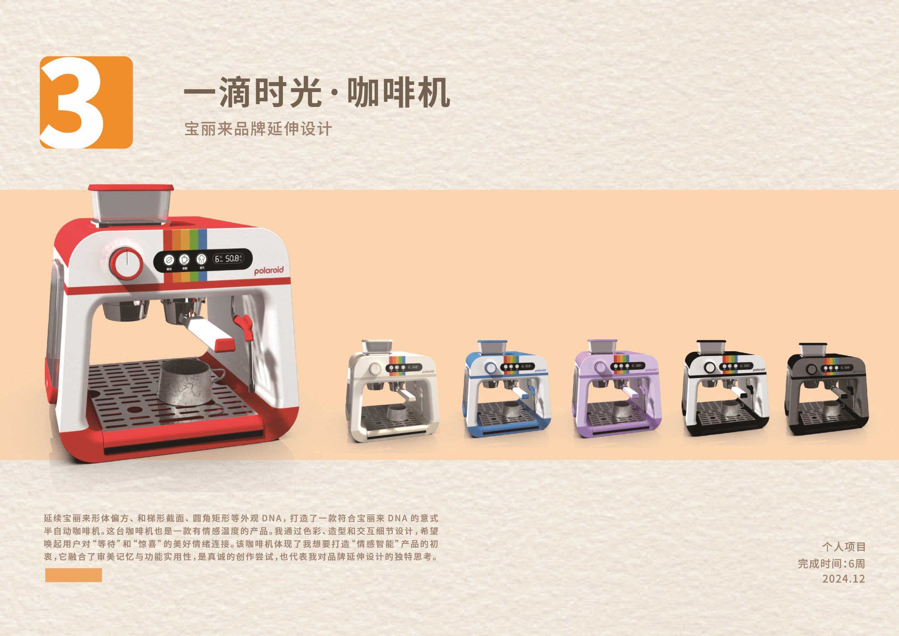
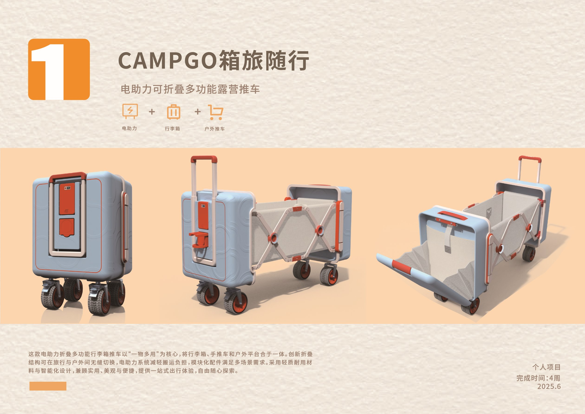
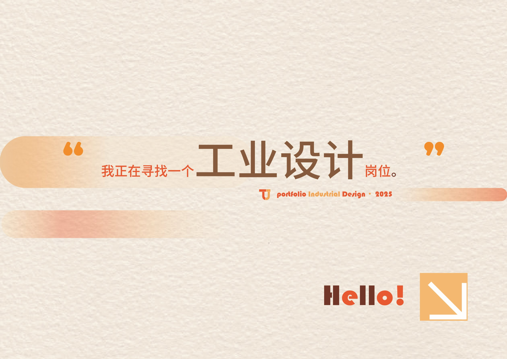
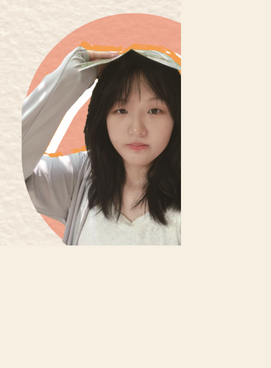

获奖经历
- 学业优秀一等奖学金
- 浙江省工业设计竞赛“云和木玩”产业赛道三等奖
- 浙江省畲乡苔藓比赛二等奖
- 浙江省浙里禁毒 Π 比赛三等奖
Portfolio Industrial Design · 2025
我正在寻找一个工业设计岗位。
来自浙江科技大学产品设计专业，关注情绪化体验、产品叙事与场景化使用逻辑。 我希望把产品做得不止能用，也能让人愿意与它产生共鸣。




About Me
我是来自浙江科技大学 23 级产品设计的田婧。浙江科技大学产品设计与工业设计同源，是国一流专业。 本人专业能力优秀，绩点第一，获得学业优秀一等奖学金。
在设计过程中，我是一个问题解决狂和细节控。我的设计根植于用色彩传递情绪核心理念， 特别希望用户可以与产品产生共鸣。
Selected Works
网站主体延续原作品集的纸张肌理、暖橙渐变与横向展板式叙事。 点击每个项目的“查看原作品页”可以继续浏览对应 PDF 页面。
Other Works
除了完整项目外，也整理了几组体量更轻但表达很完整的小作品与视觉实践。
Original Pages
1 / 1